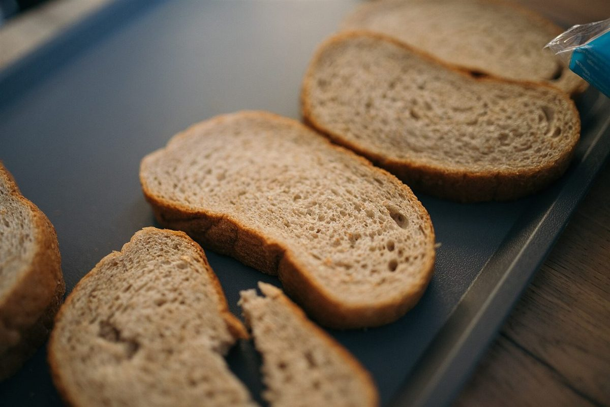
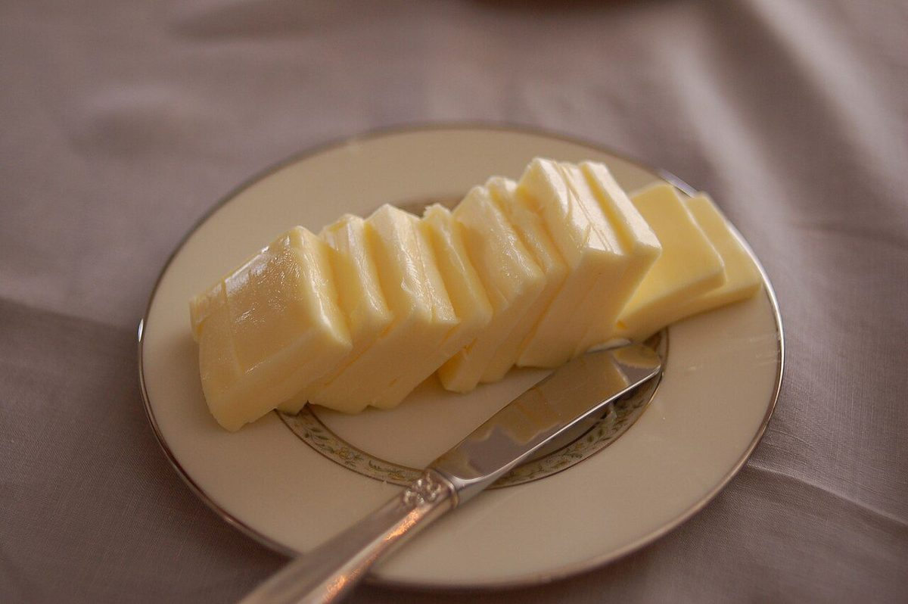

メニュー
メニュー
メニューと価格は準備中です。確認でき次第、こちらに載せます。
品書きの枠
ここに、品書きが入ります。
| 項目 | 内容 | 価格 |
|---|---|---|
| 品名 その1 | 準備中 | 準備中 |
| 品名 その2 | 準備中 | 準備中 |
| 品名 その3 | 準備中 | 準備中 |
| 品名 その4 | 準備中 | 準備中 |
上の表は枠だけです。お店で扱う商品・価格を示すものではありません。
パンの写真(イメージ)
パンのある風景のイメージ。
お店の商品の写真ではありません。フリー素材のイメージ(国外または撮影地不明)です。扱う商品を示すものではありません。

切り分けたパンのイメージ 
パンとバターのイメージ(オーストラリア) 
レーズン入りパンの断面イメージ 
焼き上がりの棚のイメージ 
バターのイメージ 
ジャムとトーストのイメージ(イギリス)